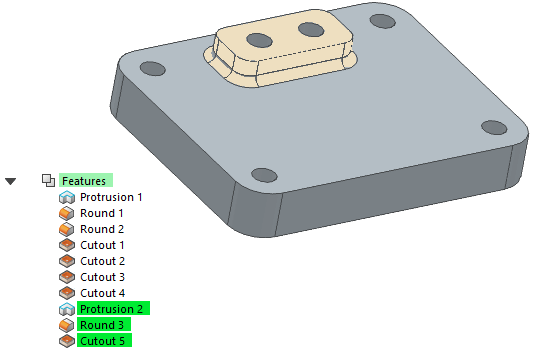
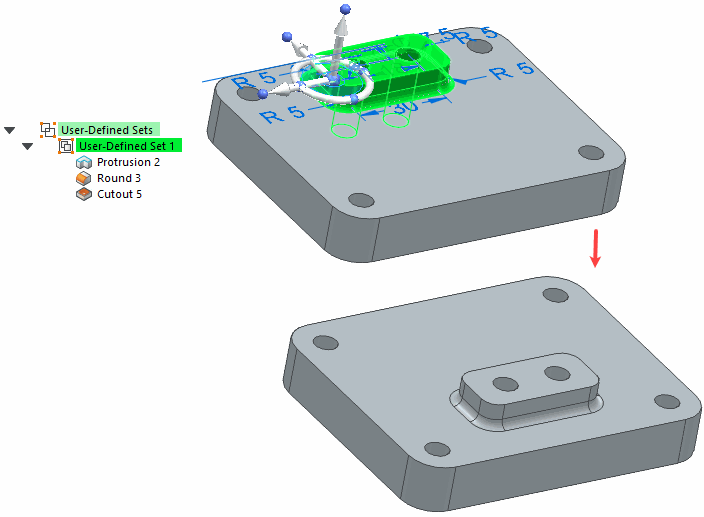

Working with user-defined sets
You use user-defined sets to group a set of features, faces, sketches, and other modeling elements into one entry in the Synchronous portion of PathFinder. This can make it easier to manipulate the set of elements when modifying the model. When you create a user-defined set, it is added to the User-Defined Set collection in PathFinder.
For example, you can create a user-defined set that includes an extruded feature, two cutouts on the extruded feature, and the round features between the extruded feature and the rest of the model.

You can then select the user-defined set in PathFinder and use the steering wheel to quickly move the user-defined set to a new location.

User-defined sets are only available in the Synchronous portion of a model.
The following commands are available for working with user-defined sets:
-
Create User-Defined Set
-
Add to User-Defined Set
-
Dissolve User-Defined Set
Creating user-defined sets
You can create a user-defined set by selecting the elements you want in the set in PathFinder or the graphics window. With the set of elements selected, you can use the Create User-Defined Set command on the shortcut menu to create the set. You can use the Rename command on the shortcut menu to rename the set to a more logical name.
The following element types can be included in a user-defined set:
-
Faces
-
Features
-
Complete sketches
-
User-defined reference planes
-
User-defined coordinate systems
-
PMI dimensions (only when another valid element is also selected)
Some types of elements are not valid for adding to a user-defined set. If no valid elements are in the select set, the Create User-Defined Set and Add to User-Defined Set commands are not available. Also, these commands will not be available in the Ordered portion of the model.
Adding to an existing user-defined set
The Add to User-Defined Set command can be used to add new elements to an existing user-defined set. When you select an element to add to an existing set, then click the Add to User-Defined Set command on the shortcut menu, you are prompted to select an existing set to which you want to add the new elements. You can then select the existing set in PathFinder.
Dissolving a user-defined set
The Dissolve User-Defined Set command can be used to dissolve or modify an existing set. When you dissolve an existing set, the element set remains selected. You can then deselect the elements you wanted to remove from the previous set, then use the Create User-Defined Set command to create a new set that does not contain the deselected elements.